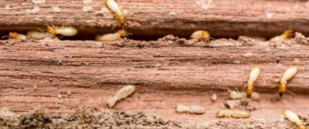
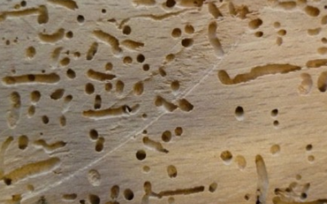
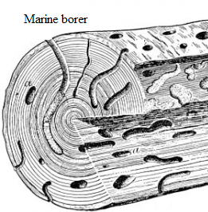

Chapter 08: Insects and Wood borers¶
Definition and purpose¶
There are different types of insects that feed on wood and wood products. Those pests that damages the wood should be identified and the necessary knowledge to control then is equally important. The wood destroying pests can be divided into four categories and they are carpenter ants, termites, bark beetles/ woodborers and powder post beetles.
Identify termites or white ants¶
1) Termites¶
Termites are types of insects which forms a colony inside the timber and feeds on the core part of the timber rapidly. They do not disturb the outer layer of timber which makes them hidden until whole structure collapses down. Some trees like sal, cedar, teak, redwood and cypress show some resistant to termites.
Figure 8-1. Termites on wood¶
2) Beetles¶
Beetles destroys the sap wood of the tree and makes a tunnel like hole in the bark of size about 2mm diameter. Timber is converted into flour like powder form and the hole are used by larvae of these beetles. Almost all hardwood trees are likely to be damaged by beetles.
Figure 8-2. Beetles on wood¶
3) Marine borers¶
Marine borers are found in salty water or coastal areas. Although, they do not eat wood but makes large tunnels up to 25 mm in diameter to live inside it. No timber found in their area is completely immune from their attack. And the timber attacked by them looses its strength and color.
Figure 8-3. Marine borers on wood¶
Removal of termites¶
There are various ways to remove termites from home and they are:
1) Non-chemical method
This method discourage use of insecticides rather opts for physical barrier like steel mesh and sands of particular size.
2) Chemical method
This method uses termiticides chemicals that does not pose risk to human health and environment but are effective on removing termites.
4) Termite baits method
This method discourages any use of insecticides and rely on cellulose baits that contain a slow-acting insecticide. For example, use of poison bait which involves attracting foraging termites that will then spread the poison back in the colony.
5) Wood treatment method
This method uses spray to wooden materials to protect from insects.
6) Cleanliness
Removing mulch from around the home and placing timber effected by termites in direct sunlight.
Reason of termites develop in homes¶
There are there types of termites that are found in homes and they are dampwood, drywood and subterranean. Termites need food (i.e. cellulose or wood), moisture and warmth to survive so, homes with wooden furniture can be their ideal stay.
Termites are born with distinct roles within the colony i.e. workers, solders and alates. Alates or swarmers are termites with wings capable of reproduction that leaves the nest to start new colonies.
Drywood termites enters into homes when alates or swarmers finds a crevice in the wood. It digs little nest, seal themselves inside and begin to produce eggs to build up their colony. In order to control them, if you see any alates or its abandoned wings inside home then call the termite control specialist for inspection. Similarly, dampwood termites seeks dampwood in homes. And subterranean termites seek the moist soil and wood in contact with ground. They also build mud tubes that connects soil and wood for protection against dehydration and route.
Control termites and white ants/insects by providing proper ventilation (air circulation to home)¶
Dampness and humidity are the common sign of poor ventilation in residentials. Dampness provides the perfect environment for termites and other pests to breed. A good sub floor ventilation maintains the moisture content of flooring. As fresh dry air enters from sub floor ventilation, it absorbs moisture vapors and takes it out form the building. A good ventilation controls the risk of termites and white ants/insects since they are active in moist environments. Similarly, the fungi, mould, rooting boards, bowing timber and lifting flooring can be prevented by ventilation as a result pest are also controlled.
Periodical carefulness of termites in building¶
Homeowner should regularly check the conditions inside the house as well as around of it. High level of moisture should be reduced and any exposed wooden material in contact with soil should be covered. Examine exposed wood for hollow spots using screwdrivers or similar tools. Any broken inlets like window screens, imperfectly sealed plumbing lines, exteriors cracks, doors gap etc. should be examined regularly. Being contact with pest control expert for effective ways to encounter termite problems is a good idea. Wood debris or pile of firewood should be removed from location too near to home.
Preservation of wood¶
Preservation of wood is an art of increasing life of wood treating it with different preservation methods. The purpose of preservation of wood are:
1) To protect wood from fungi and insects.2) To make wood durable.3) To bring good appearance in wood.4) To increase the life of wood.
There are different types of preservatives and they are:
1) Oil preservatives¶
The commonly used preservative is coal-tar or wood-tar. Coal tar is very effective and is applied on external surface of wood. Coal tar can be used with or without mixing with soluble oils.
2) Water soluble preservatives¶
This preservative is prepared by mixing toxic chemicals like zinc chloride, boric acid and copper chrome arsenic composition (It is also called Ascue where, Arsenic is 1part, copper sulphate is 3 parts and sodium dichromat of 4 parts) with water. This preservative is cheaper than oil preservatives. It is used when furniture preservation is of prime importance.
3) Organic soluble preservatives¶
It is the most effective preservative for timber. The solution is prepared mixing nepthol and phenol which is then applied in timber. It is costlier than other preservatives.
There are various methods of preservation which helps in preservation of timber and some are listed below:
|
|
Similarly, there are various methods of preservative treatment applied for timber with desired moisture content and size.
a) Hot and cold bath
b) Pressure method
c) Surface application
d) Soaking method
e) Boucherie method
The selection of preservative treatment depends upon the following factors:
• the type of timber;• the permeability of the timber;• the location where timber is to be used;• the type of preservative is to be used;• the cost of the process.
Hot and cold bath method¶
The hot and cold bath method involves immersing the stack of timber into a tank full with preservatives (usually creosote). The tank is then heated to about 80-90°C and maintain that temperature for certain period. Afterwards, allow the tank to cool down until requires preventives is absorbed into the cells of timber. This method gives better depth of penetration up to 5cm. This method is expensive since it uses heat energy to heat up the preservatives.
- Advantages:
- 1) It ensures sterilization of timber against fungi and insects2) Although it is expensive this method is the most effective non-pressure solution.3) It is used in areas with heavy termite presence.4) It can be used to treat timber with sapwood and heartwood.
Pressure method¶
- The pressure method involves the timber being placed in sealed pressure vessel or cylinder and air being sucked out from the vessel creating vacuum. Then the preservative is subjected into the vessel and second stage vacuum is created which removes the excess preservative. This method can be performed by two way:
Fuel cell or Bethel processEmpty cell or Rueping process
In fuel cell process, the cells of timber are filled with preservative whereas in empty cell only the cell walls of timber are filled with preservative.
- Advantages:
- a) It is used for treating timbers with low permeability.b) It the most effective preservative treatment method.c) It is used in places with fungi and insects.d) It uses less preservatives.e) It can be used to treat timber of different species.f) It can be used to treat timber with sapwood and heartwood.
Defects caused by dampness¶
Damp problem can occur in places exposed with moisture such as rain, external gutters and water pipes.
Figure 8-4. Dampness on wood¶
- The defects on timber caused by dampness are as follows:
- 1) It decays and disintegrate timber and support growth of fungus.2) It causes dry rot in timber.3) It causes warping of timber.4) It deteriorates the floor covering.5) It makes timber vulnerable to attack from insects and termite.6) It causes the blistering, flaking and bleaching of preservatives on timber like paint.7) It creates the unhygienic appearance of the furniture.
What’s next?¶
We now know about woods, tools and basics of carpentry. In next chapter , we will learn about wood carvings.